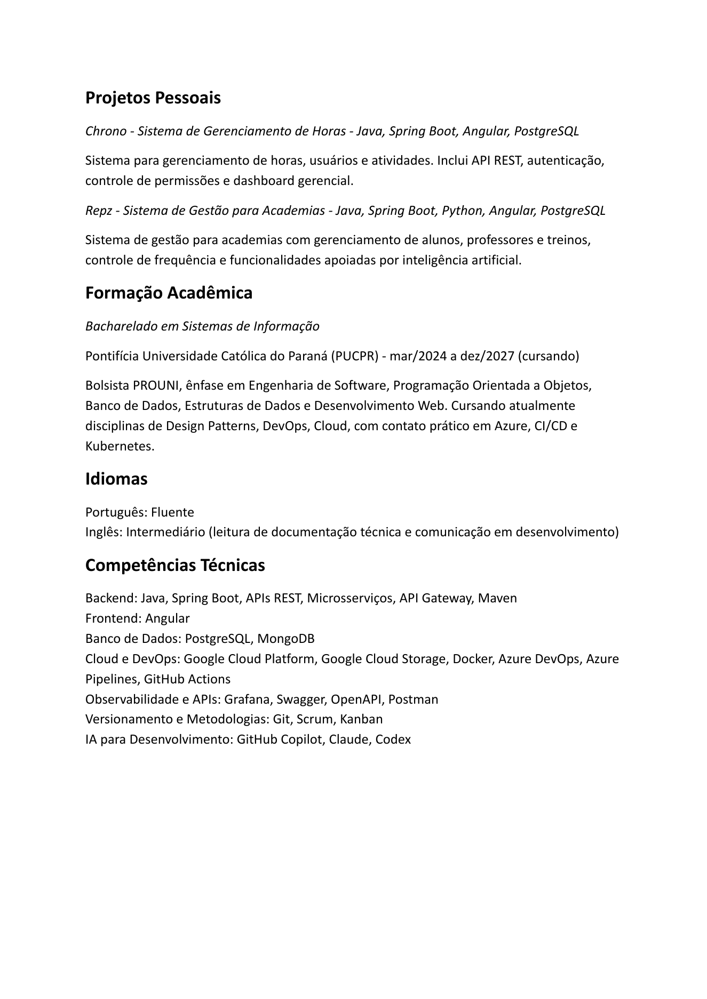

Eduardo Henrique Fabri
Desenvolvedor de Software | Java | Spring Boot | Cloud
Curitiba, Paraná |47992792189|eduardohfabri@gmail.com|Portfólio
Resumo Profissional
Desenvolvedor de Software com experiência profissional predominante em backend Java e Spring Boot, atuando em ambiente de arquitetura de microsserviços, com contato com API Gateway e Authorization Server, além de observabilidade via Grafana e análise de logs. Experiência no desenvolvimento e manutenção de APIs REST, integração entre sistemas, bancos de dados relacionais e não relacionais e sustentação de aplicações em produção. Experiência inicial com Angular em projeto profissional de integração com WhatsApp, e contato atual com a tecnologia na stack do sistema em migração (Dental Uni). Atuação em ambientes ágeis, com participação em Daily, Planning e outras cerimônias, além da utilização de ferramentas de IA, como GitHub Copilot, Claude e Codex, para apoio à produtividade no desenvolvimento. Contato com práticas de CI/CD em projetos acadêmicos utilizando GitHub Actions.
Experiência
Wise Group - Desenvolvedor de Software Júnior - Backend Java Abril/2025 – atual
- Atuação predominante no desenvolvimento backend utilizando Java e Spring Boot. - Experiência em ambiente de arquitetura de microsserviços. - Acompanhamento da observabilidade das aplicações utilizando Grafana para logs. - Desenvolvimento e manutenção de APIs REST e integração entre sistemas. - Integração com APIs externas para consulta e validação de dados. - Integração com Google Cloud Storage (GCP) para armazenamento e gerenciamento de arquivos. - Participação na migração de sistema legado do cliente Dental Uni, utilizando Java e Angular, com atuação predominante em backend. - Desenvolvimento de aplicação de integração com WhatsApp, utilizando as stacks Node.js + React + MongoDB e Java + Angular + PostgreSQL. - Correção de bugs, manutenção e sustentação de aplicações em produção. - Documentação de APIs utilizando Swagger e OpenAPI. - Colaboração com Tech Leads e equipes de desenvolvimento utilizando Git. - Participação em Daily, Planning e demais práticas de trabalho ágil.

Projetos Pessoais
Chrono - Sistema de Gerenciamento de Horas - Java, Spring Boot, Angular, PostgreSQL
Sistema para gerenciamento de horas, usuários e atividades. Inclui API REST, autenticação, controle de permissões e dashboard gerencial.
Repz - Sistema de Gestão para Academias - Java, Spring Boot, Python, Angular, PostgreSQL
Sistema de gestão para academias com gerenciamento de alunos, professores e treinos, controle de frequência e funcionalidades apoiadas por inteligência artificial.
Formação Acadêmica
Bacharelado em Sistemas de Informação
Pontifícia Universidade Católica do Paraná (PUCPR) - mar/2024 a dez/2027 (cursando)
Bolsista PROUNI, ênfase em Engenharia de Software, Programação Orientada a Objetos, Banco de Dados, Estruturas de Dados e Desenvolvimento Web. Cursando atualmente disciplinas de Design Patterns, DevOps, Cloud, com contato prático em Azure, CI/CD e Kubernetes.
Idiomas
Português: Fluente Inglês: Intermediário (leitura de documentação técnica e comunicação em desenvolvimento)
Competências Técnicas
Backend: Java, Spring Boot, APIs REST, Microsserviços, API Gateway, Maven Frontend: Angular Banco de Dados: PostgreSQL, MongoDB Cloud e DevOps: Google Cloud Platform, Google Cloud Storage, Docker, Azure DevOps, Azure Pipelines, GitHub Actions Observabilidade e APIs: Grafana, Swagger, OpenAPI, Postman Versionamento e Metodologias: Git, Scrum, Kanban IA para Desenvolvimento: GitHub Copilot, Claude, Codex